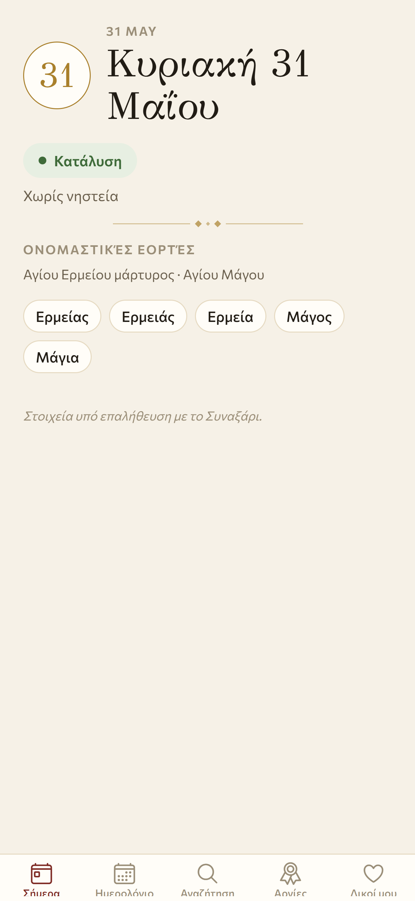
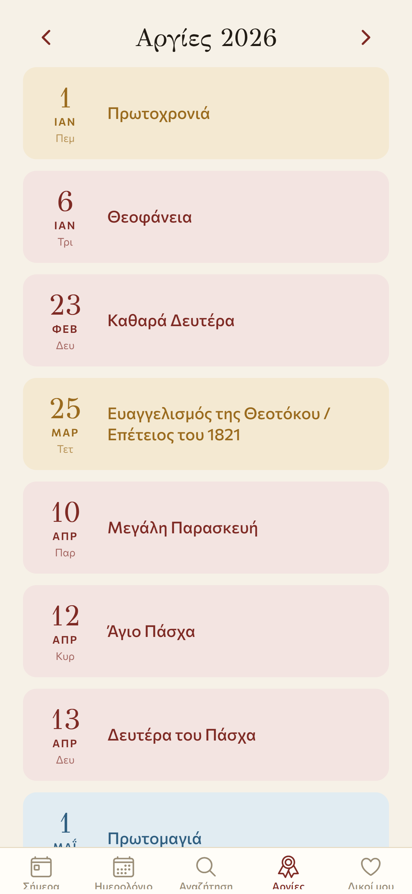
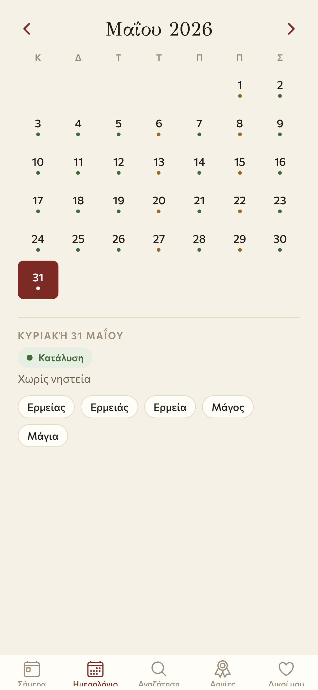
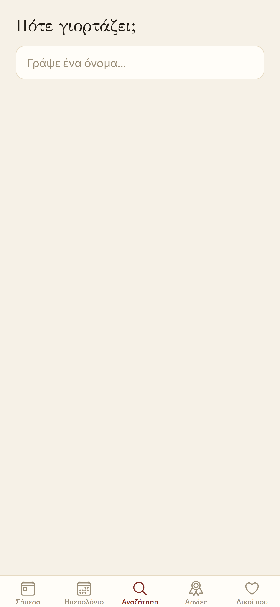

Eortes: a Greek name-day app that cannot go stale
A third project. I have been building a Greek Orthodox name-day and fasting app for the diaspora and for Greece. It is called Eortes. There is no live URL because phone apps do not work that way, but there is a working build on my own phone and a store listing in two languages waiting in the queue. This is the diary of why it exists and the one architectural choice that decides everything else.

Why a name-day app
If you grew up Greek, today is the question. Ποιος γιορτάζει σήμερα. Who celebrates today. The name-day matters more than the birthday for an entire culture. Forgetting your aunt's name-day is the kind of mistake the family remembers for a year.
The diaspora has it worse. You move to Berlin, you lose the church bulletin board, the parish calendar, the grandmother who used to call you. The thing that filled in the gap should be an app. There are apps. They are all bad.
The pattern is the same in every one of them. Person opens the app. The fasting status is wrong, because the movable feasts shifted and nobody updated the data. The reminder never fired, because the developer stopped pushing updates. The app sits in the store with a frozen 2018 calendar and a 1-star average. The author moved on years ago.
Greek-speaking Twitter has a slow rolling complaint about this. Once a year, around Easter, somebody posts a screenshot of an app showing the wrong fasting day and the replies are a hundred people listing the apps they have abandoned.
The one architectural choice
The reason all of these apps rot is that they treat the calendar as data. A spreadsheet. A JSON file. Someone has to type next year's dates into it every year, and someone has to push the new build. The day that person loses interest, the app starts lying.
So the architectural choice for Eortes was the only one that survives an author losing interest. The calendar is not data. It is computed.
Orthodox Pascha is a function of the year. Meeus gave us the formula in 1991. Once you have Pascha for any year, every movable feast is an offset from it. The Lenten fast starts 48 days before Pascha. The Apostles' fast starts 8 days after Pentecost, which is 50 days after Pascha. Wednesdays and Fridays are fast days unless the week is a fast-free week. Great feasts modify the rules. All of it is rules, not entries.
The fixed name-days are the only thing that is a table, and those do not change. Άγιος Ερμείας is on the 31st of May this year and every year. The only ambiguity is which name a given person identifies with, and that is a user choice, not a server one.
The whole thing fits on the phone. The app has no backend. It does not need an internet connection after it installs. If I never push another update, the calendar is still correct in 2028, in 2035, in 2042. The thing that makes it correct is the engine, not me, and the engine does not get bored.


The thing that blocks launch
The engine is done. The four screens are done. The fasting math is done. The Apple In-App Purchase + Google Play Billing wrapper is wired through RevenueCat, so the People layer (the reminders + the one-tap "wish them a happy name-day") unlocks with a one-time small payment, no subscription. There is a launch playbook in the repo for "publish this and then walk away."
The thing that blocks me is the data. The fixed name-day table I have right now is what the engineer in me calls a high-confidence skeleton. About 73 entries spanning all 12 months, with the major saints in. Every single entry carries a flag called VERIFY in the data file. The app shows a footnote in the corner that says Στοιχεία υπό επαλήθευση με το Συναξάρι. Data being verified against the Synaxarion.
I am not going to drop that footnote until I have walked the table against the church's authoritative calendar and signed off every entry. Because the thing that ships an app like this to a 1-star average is one wrong fasting day. A self-running app on wrong data is the one fatal mistake.
I wrote a verification harness that diffs my computed calendar against the GOARCH ICS file for the year and emits a markdown report of what needs eyes. The harness is the gate. Until the report comes back empty for a given year, the footnote stays and the app does not launch.

The competitors I am not trying to be
There is a much louder lane I am deliberately not entering. Hallow, the Catholic prayer app, raised something like 50 million dollars and ships daily devotional audio with name actors. There is no Orthodox version of that at scale. I am not going to be the Orthodox version. The Hallow content treadmill is a different product and an unwinnable arms race for one person with a laptop.
The thing I can do that Hallow cannot is correctness without a content team. An app that costs me almost nothing to run, that the user pays once and never again, that does the boring useful thing reliably for the next decade. The wedge is not content. The wedge is that the calendar is right.
The aesthetic
I called the visual direction Byzantine-modern. Warm parchment background. Oxblood for accents. Muted gold for the ornament dividers. A high-contrast GFS Didot for the headers, a clean sans for the body. Older eyes can read it without squinting. The icons are warm and rounded, not sharp.
This was the part where I did the most second-guessing. The first three drafts were dark mode with neon greens. Looked like every other modern app. Wrong. The thing this app is competing with culturally is the parish calendar printed on glossy A4 paper. Not Notion. Not Linear. The aesthetic had to feel like a churched-up family object, not a productivity tool.
What's left
Verify the name-day data, month by month, against the Synaxarion. Soft-launch in Greece only first, so a small forgiving audience catches anything I missed before the diaspora finds it. Then flip the rest of the EU on and start mentioning it on the podcast.
There is no waitlist for this one. The launch will be in the App Store and the Play Store and that will be the news. If you are Greek, or married to one, and you would like to be one of the soft-launch testers, tell me. The Greece-only build is the next move.
Comments
Anyone can post. Captcha keeps the bots out. No links allowed.